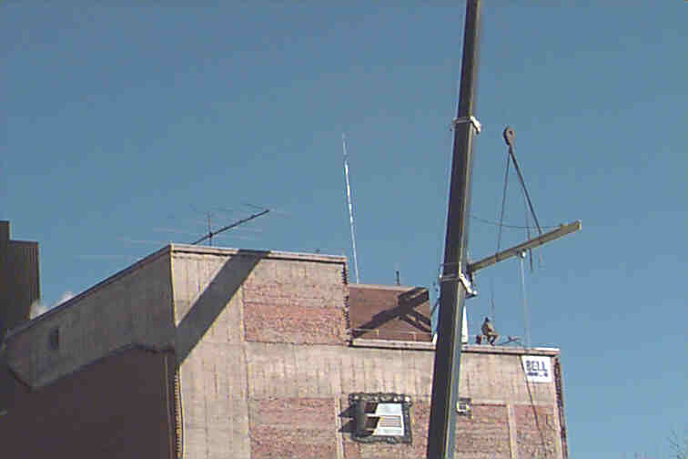

K3YGG
National Institutes of Health, Bethesda, MD
Recent work on the NIH Power Plant in Bethesda, MD includes a face lift of the old brick structure as well as roof work. The roof work comes very close to the club's KLM 7-element log periodic beam and R7000 multiband trapped vertical. It is too bad that the crane used for the roof work is not also available for mounting new antennas!
